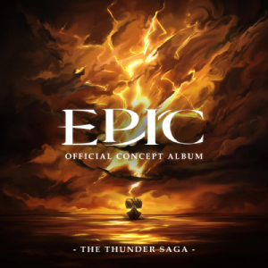
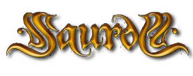
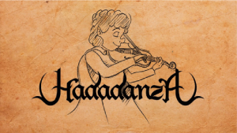

Estas son mis bandas favoritas. Como podrás ver, uno de mis géneros favoritos es el Folk Metal. Espero que disfrutes de mi selección personal.
EPIC: The Musical

EPIC: The Musical, un álbum conceptual sobre La Odisea.
Aquí me he tomado una pequeña licencia. EPIC es el trabajo de fin de carrera de Jorge Rivera-Herranz. Es una reinterpretación de La Odisea en formato de álbum musical que está dividido en 9 sagas que recorren desde la caída de Troya hasta el regreso a Ítaca. Si tienes tiempo, mira alguna animación que puedes encontrar en línea hecha por sus seguidores de alguna de las canciones.
Canción destacada: The Horse and the Infant
La primera canción del musical, narra el asedio de Troya y el propósito que los dioses le dan a Odiseo, asesinar al hijo de Héctor.
Descripción
Fragmento de The Horse and the Infant, tema de apertura de EPIC: The Musical. Pieza narrativa sobre el asedio de Troya y la encrucijada que los dioses plantean a Odiseo respecto al hijo de Héctor.
Saurom

Saurom, creadores del Juglar Metal.
Saurom es una banda de Folk Metal del sur de España que mezcla elementos de la música tradicional con un toque moderno. Ellos mismos llaman a su estilo "Juglar metal" y como podrás ver en las canciones con las que comenzaron, les encanta la obra de Tolkien.
Canción destacada: El lazarillo de Tormes
Esta fue la primera canción que escuché y me encanta cómo narran la historia.
Descripción
Fragmento de El lazarillo de Tormes, de Saurom. Canción de Folk Metal ("Juglar metal") con instrumentación tradicional y guitarra eléctrica centrada en la narración de la obra picaresca.
Hadadanza

Hadadanza, otra banda de Folk Metal impresionante.
Hadadanza es una banda de Folk Metal inspirada también en la narrativa de Tolkien. Ha colaborado con muchos otros grupos del panorama español en varios discos y álbumes. En concreto, el álbum de "El Circo de los muertos" posee una historia entrelazada entre las canciones que cuenta la historia de Mia, una niña que acaba rodeada por los particulares integrantes del circo. Incluso Luis Posada ha actuado como narrador en alguna de sus canciones.
Canción destacada: La contorsionista
La canción de una de las integrantes del circo y su retorcido don. Es una de las canciones que más he escuchado durante los últimos años.
Descripción
Fragmento de La contorsionista, de Hadadanza. Tema de Folk Metal perteneciente al álbum conceptual El Circo de los muertos, sobre uno de los personajes del circo que rodea a Mia.